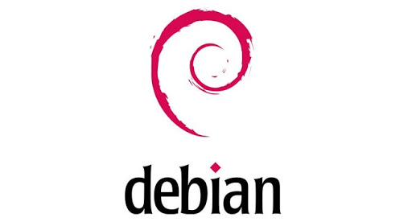

Debian é uma distribuição que utiliza o Kernel Linux ou Hurd em conjunto com outros aplicativos para oferecer um sistema operacional completo e universal. Esse sistema é uma das mais antigas e tradicionais distribuições Linux, usado como base para a criação de diversas outras distribuições, bem como fonte de pacotes de software para estas.
O maior destaque do Debian é, sem dúvida alguma, a enorme quantidade de pacotes de software. A quantidade é tão grande, que ele possui três imagens ISO de DVD.
O Debian também se destaca por fornecer versões do sistema para várias plataformas além do tradicional PC, como amd64, arm64, armel, armhf, i386, mips, mipsel, powerpc, ppc64el e s390x.
Outro fator muito importante no Debian é o compromisso com a estabilidade do sistema. Apesar de possuir uma versão instável para testes, sua versão principal só é lançada quando considerada extremamente livre de problemas de estabilidade.
Infelizmente, por causa disso, a versão principal do Debian acaba fornecendo softwares um pouco desatualizados. Para o uso em servidores e usuários não tão apressados, isso termina sendo uma vantagem.
Prós :
Possui uma enorme quantidade de pacotes de software
Possui versões para várias plataformas além do tradicional PC
Tem um forte compromisso com a estabilidade
Contras
Softwares um pouco desatualizados

Baixando e Instalando Debian:
O Debian é distribuído livremente pela Internet. Você pode baixá-lo integralmente partir de qualquer um dos nossos espelhos (mirrors). O Manual de Instalação contém instruções detalhadas da instalação e as notas de lançamento podem ser encontradas aqui.
Área de trabalho Debian: